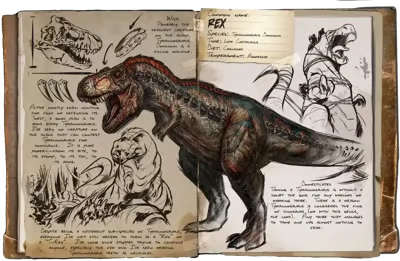

Rex
🦖
Criatura - Carnívoro
A
Combate y bosses
Una de las criaturas más utilizadas para enfrentarse a jefes gracias a su gran cantidad de vida y daño.
“El rey de los grandes depredadores de la isla.”
ARK Wiki
9 / 10